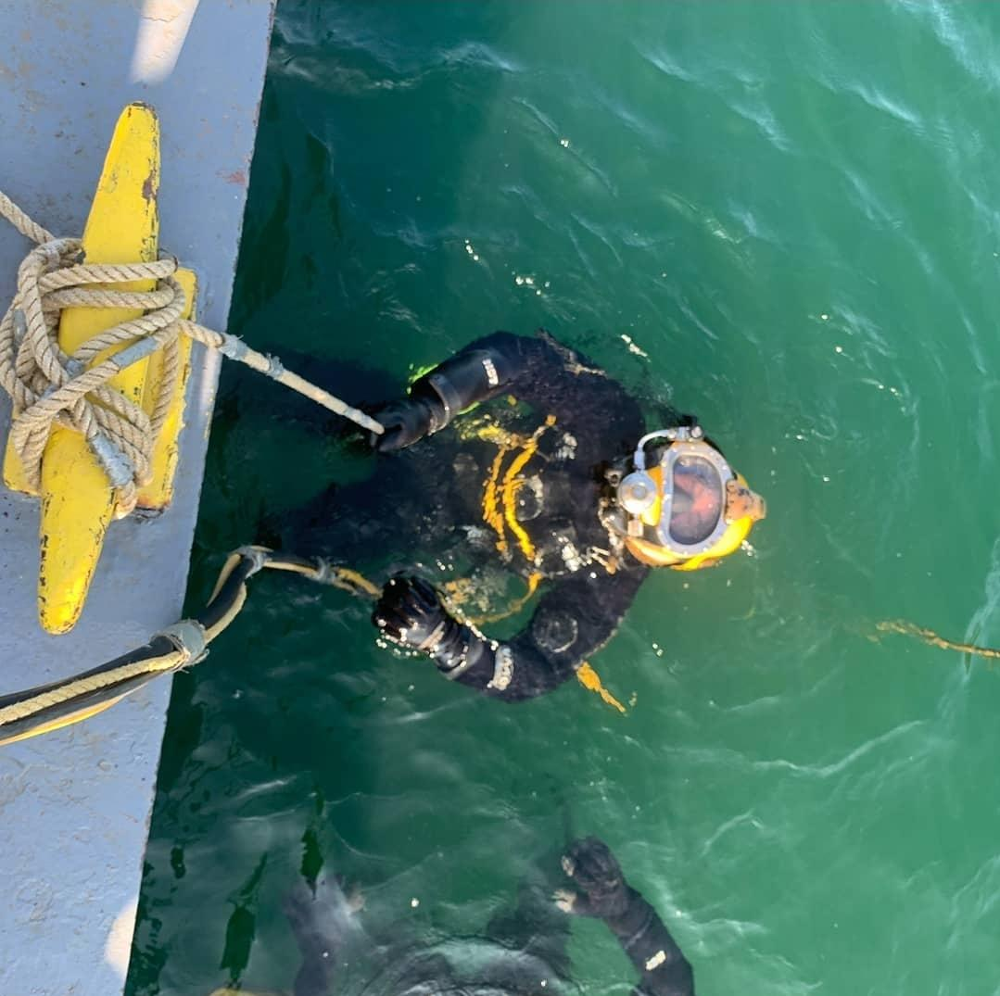

I joined the U.S. Coast Guard in 2004. I served as an Operations Specialist specializing in
search and rescue in both Northern California then Upstate New York on the Great Lakes.
After the USCG, I began personal training. After managing personal training departments
for multiple national chains, I opened my own personal training studio, New Beginnings Fitness.
I took up welding. Although I do not continue to do it professionally, I still enjoy
the activity, and make welding art with my personal mig welding rig at home.

I then took my welding underwater and became a certified commercial diver where I
became proficient in all forms of underwater construction and inspections.
Unfortunately, injuries and surgeries made that career path come to an end. However, I still enjoy
scuba diving and getting in the water as much as possible.
I now spend as much time with my family as possible. They are the reason I've made this
big career change. I've always enjoyed keeping up with technology and learning how things work, and coding
checks both of those boxes for me. I am looking forward to beginning this chapter of my life with an interesting
and challenging career....that will not put me in the hospital.
I don't want any more reasons to go to the hospital!Back to Home